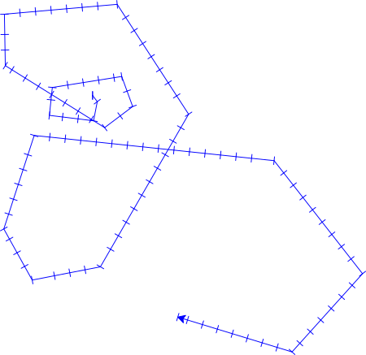
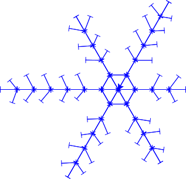
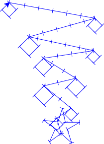

Christmas decorations, starry nights, and randomness
Contents
Christmas decorations, starry nights, and randomness#


Which one of the starry skies above looks the most “natural”? When we create art with programming, it is easy to end up with very ordered and perfect-looking images. This can lead to gorgeous patterns, but nature is not perfectly ordered, so it can also look slightly “artificial”. A trick to include a little bit of nature’s “not quite perfect”-ness into our art is to use randomness. Adding randomness is a technique that is commonly found in art, game design, animation and music.

Art#
Generative art, variation of 10print
Procedurally generated textures for game design#
Illustration of procedurally generated textures (illustrasjon by Drummyfish)
{kind=link}

Procedural landscape#
Procedurally generated landscape (illustration by Levyznin)
{kind=link}

Music#
Photograph of a modular synthesizer. These instruments can often play sequences of sounds in random order. (Image by Muff on Flickr (CC-BY 2.0))
Randomness with Python#
Below we se an example of the type of embroidery we will make in this tutorial.
{kind=link}
Let’s start by looking at how to generate random numbers in Python. Below is some code to print a random number to the terminal.
1import random
2
3random_number = random.randint(1, 6)
4print(random_number)
5
- Line 1
Imports the
randomlibrary, which we can use to draw random numbers.- Line 3
Uses the
random.randint-function to draw a random number between1and6(including endpoints) and stores this random number in therandom_numbervariable.
Try it yourself
Run the code several times. Do you get a different number?
Modify the code so that it instead prints a random number between 50 and 100
Run the code several times again. Do you get different numbers now compared to before?
We can use this to make our embroidery patterns more interesting. The code below embroiders a simple star:
1from turtlethread import Turtle
2
3needle = Turtle()
4with needle.running_stitch(25):
5 for ray in range(6):
6 ray_length = 100
7 needle.forward(ray_length)
8 needle.backward(ray_length)
9 needle.right(60)
10
11needle.visualise()
{kind=link}
To make this star look a little more “natural” and interesting, we can apply randomness to the length of the rays.
1import random
2from turtlethread import Turtle
3
4needle = Turtle()
5with needle.running_stitch(25):
6 for ray in range(6):
7 ray_length = random.uniform(80, 120)
8 needle.forward(ray_length)
9 needle.backward(ray_length)
10 needle.right(60)
11
12needle.visualise()
{kind=link}
- Line 7
draws a random number between
80and120and stores it in theray_lengthvariable.
We can see that the star now looks a little more random and, therefore, a little more natural.
Try it yourself:
Modify the code, so the ray length is between 25 and 125 instead of 80 and 120. How does the look of the star change?
Modify the code, so the number of rays in the star is also random. (HINT: the angle between each ray must be
360 / number_of_rays)
Click here to see an example of how the finished code should look:
1import random
2from turtlethread import Turtle
3
4needle = Turtle()
5with needle.running_stitch(25):
6 number_of_rays = random.randint(3, 10)
7 for ray in range(number_of_rays):
8 ray_length = random.uniform(25, 125)
9 needle.forward(ray_length)
10 needle.backward(ray_length)
11 needle.right(360 / number_of_rays)
12
13needle.visualise()
{kind=link}
Attention
Make sure your code matches the finished code above before you proceed.
So, we have created one random star, but we can kick it up a notch by drawing multiple stars randomly placed in the sky. We can, for example, use the goto command and let the needle move to a random position on the fabric for each star. The code below draws a starry sky with four random stars randomly placed in the sky.
1import random
2from turtlethread import Turtle
3
4needle = Turtle()
5with needle.running_stitch(25):
6 number_of_stars = 4
7 for star in range(number_of_stars):
8 x = random.randint(-250, 250)
9 y = random.randint(-250, 250)
10 needle.goto(x, y)
11
12 number_of_rays = random.randint(3, 10)
13 for ray in range(number_of_rays):
14 ray_length = random.randint(25, 100)
15 needle.forward(ray_length)
16 needle.backward(ray_length)
17 needle.right(360 / number_of_rays)
18
19needle.visualise()

- Line 6
Defines a number_of_stars variable that decides how many stars we want to draw
- Line 7
Starts the loop we will use to draw multiple stars
- Lines 8-9
Draws random coordinates between -250 and 250 for each star
- Line 10
Moves the needle to a random position before drawing a star
This is a beautiful, random starry sky! But now we also embroider a line between each star, which gives a cool effect that can look like constellations. However, if we don’t want these lines, we can use jump stitches to tell the needle to move without stitches between each star.
1import random
2from turtlethread import Turtle
3
4needle = Turtle()
5
6number_of_stars = 4
7for stjerne in range(number_of_stars):
8 x = random.randint(-250, 250)
9 y = random.randint(-250, 250)
10 with needle.jump_stitch():
11 needle.goto(x, y)
12
13 with needle.running_stitch(25):
14 number_of_rays = random.randint(3, 10)
15 for ray in range(number_of_rays):
16 ray_length = random.randint(25, 100)
17 needle.forward(ray_length)
18 needle.backward(ray_length)
19 needle.right(360 / number_of_rays)
20
21needle.visualise()

- Lines 6-7
The loop that iterates over the stars is moved outside the code block that defines stitch type. We move the loop to allow for different stitch types when embroidering a star and moving the needle between stars.
- Line 10
Instructs the needle to move without creating any stitches. If the embroidery machine supports it, the thread will be cut (if some stitches have already been embroidered so far).
- Line 13
Starts the code block where we embroider each star with a running stitch.
Try it yourself:
Modify the code to create a random number of stars.
Click here to see an example of how the finished code should look:
1import random
2from turtlethread import Turtle
3
4needle = Turtle()
5
6number_of_stars = random.randint(1, 10)
7for star in range(number_of_stars):
8 x = random.randint(-250, 250)
9 y = random.randint(-250, 250)
10 with needle.jump_stitch():
11 needle.goto(x, y)
12
13 with needle.running_stitch(25):
14 number_of_rays = random.randint(3, 10)
15 for ray in range(number_of_rays):
16 ray_length = random.randint(25, 100)
17 needle.forward(ray_length)
18 needle.backward(ray_length)
19 needle.right(360 / number_of_rays)
20
21needle.visualise()
{kind=link}

Attention
For this example, we use the randint function from the random library.
This function draws random numbers that can include the endpoints.
However, if we use the randint function from numpy.random or pylab, we would omit the second endpoints.
For example, random.randint(1, 6) draws one of these numbers: 1, 2, 3, 4, 5 or 6, while numpy.random.randint(1, 6) and pylab.randint(1, 6) draws one of these numbers: 1, 2, 3, 4 or 5.
Try it yourself:
Create your own embroidery pattern that uses randomness. Below is a gallery of that you can take inspiration from.
Example patterns with randomness#
Example 1
{kind=link}
Kode
1import random
2from turtlethread import Turtle
3
4needle = Turtle()
5
6with needle.running_stitch(20):
7 for side in range(20):
8 side_length = random.randint(5 * side, 20*side)
9 needle.forward(side_length)
10 angle = random.randint(45, 90)
11 needle.right(angle)
12
13needle.visualise()
Example 2
{kind=link}
Kode
1from turtlethread import Turtle
2import random
3
4needle = Turtle()
5
6with needle.running_stitch(20):
7 needle.circle(10)
8 for sirkel in range(5):
9 x = random.randint(-200, 200)
10 y = random.randint(-200, 200)
11 needle.goto(x, y)
12 radius = random.randint(5, 40)
13 needle.circle(radius)
14
15needle.visualise()
Example 3
{kind=link}
Kode
1import random
2from turtlethread import Turtle
3
4needle = Turtle()
5
6with needle.running_stitch(30):
7 # Draw snowflake with six sides
8 for side in range(6):
9
10 # Decide how many branches we want
11 antall_grener = random.randint(2, 5)
12
13 # Give it reflection symmetry
14 for direction in [1, -1]:
15
16 needle.forward(30)
17
18 # Add one small branch in the beginning
19 needle.right(120 * direction)
20 needle.forward(30)
21 needle.backward(30)
22 needle.left(120 * direction)
23
24 # Add a random number of branches, each having a random angle and length
25 for gren in range(antall_grener):
26 needle.forward(30)
27 branch_angle = random.randint(50, 70)
28 branch_length = random.randint(20, 30)
29
30 needle.right(branch_angle * direction)
31 needle.forward(branch_length)
32 needle.backward(branch_length)
33 needle.left(branch_angle * direction)
34
35 needle.forward(30)
36 needle.backward(60 + 30*antall_grener)
37
38 needle.right(60)
39
40needle.visualise()
Example 4
{kind=link}
Kode
1import random
2from turtlethread import Turtle
3
4needle = Turtle()
5
6with needle.running_stitch(30):
7
8 # Draw the star in the top of the christmas tree
9 needle.right(360 / 5*2)
10 for p in range(5):
11 needle.forward(30)
12 needle.right(150)
13 needle.forward(30)
14 needle.left(150)
15 needle.right(360/5)
16
17 # Reset back to start
18 needle.home()
19
20 # Draw christmas tree with ornaments
21 retning = 1
22 for gren_nummer in range(1, 10):
23 retning *= -1 # Turn around for each branch
24 y = 30 * gren_nummer
25 x = 10 * gren_nummer
26
27 # Add some randomness with regards to where the branch ends up
28 jitter_x = random.randint(-x//3, x//3)
29 jitter_y = random.randint(-10, 10)
30
31 # Go to where the branch ends
32 needle.goto(retning * x + jitter_x, y + jitter_y)
33
34 # Draw ornament
35 radius = random.randint(10, 20)
36 needle.circle(-radius)
37
38needle.visualise()